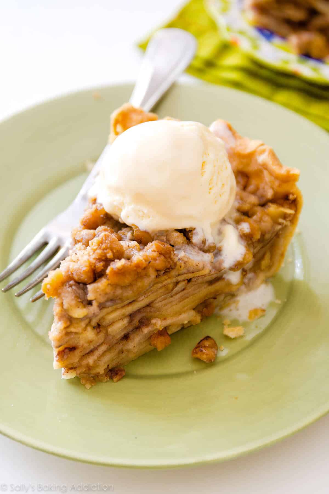

Apple Pie
Description

Apple pie knows no seasons and that is exactly why I don’t wait around for Fall every year to enjoy it. I wanted to share something a little different that still embodies everything I love about traditional apple pie and definitely deserves a spot in your favorite Thanksgiving pie recipes.
Preparing it? Well, that’s a piece of cake... I mean pie..
Ingredients
- Homemade Pie Crust (recipe makes 2 crusts; you can halve the recipe or freeze the 2nd half)
- 8–10 cups apple slices
- 2 Tablespoons (30ml) lemon juice
- 1/4 cup (31g) all-purpose flour (spooned & leveled)
- 1/4 teaspoon ground cloves
- 1/4 teaspoon ground nutmeg
- 1 and 1/2 teaspoons ground cinnamon
- 1/2 cup (100g) granulated sugar
- 1 teaspoon pure vanilla extract
Steps
- Make the filling: In a large bowl using a silicone spatula or wooden spoon, stir the apples, lemon juice, flour, cloves, nutmeg, cinnamon, sugar, and vanilla extract together until thoroughly combined. Set filling aside as the oven preheats; this time allows the apples to begin letting off their juice.
- Preheat oven to 400°F (204°C).
- Roll out the chilled pie dough: On a floured work surface, roll out one of the discs of chilled dough (if you made the entire pie dough recipe, you can freeze the other half of the dough at this time). Turn the dough about a quarter turn after every few rolls until you have a circle 12 inches in diameter. Carefully place the dough into a 9×2-inch pie dish. Tuck it in with your fingers, making sure it is smooth. Spoon the apple filling into the crust, leaving some of the liquid in the bowl—you don’t want all that in the pie. Use a small paring knife to trim excess dough off the edges. Flute the pie crust edges.
- Make the crumble topping: In a medium bowl, combine the brown sugar, cinnamon, flour, and walnuts. Using a silicone spatula, stir in the butter. The crumble topping will be thick and crumbly. Sprinkle over apples.
- Place the pie onto a large baking sheet and bake for 20 minutes. Keeping the pie in the oven, turn the temperature down to 375°F (190°C) and bake for an additional 30-35 minutes. After the first 20 minutes of bake time, I place a pie crust shield on top of the pie to prevent the edges from browning too quickly.
- Enjoy!